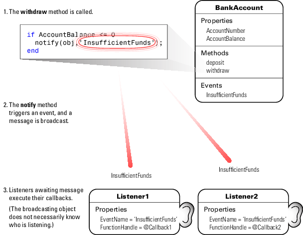

Event and Listener Concepts
The Event Model
Events represent changes or actions that occur within objects. For example,
Modification of class data
Execution of a method
Querying or setting a property value
Destruction of an object
Basically, any activity that you can detect programmatically can generate an event and communicate information to other objects.
MATLAB® classes define a process that communicates the occurrence of events to other objects that respond to the events. The event model works this way:
A handle class declares a name used to represent an event. Name Events
After creating an object of the event-declaring class, attach listener to that object. Control Listener Lifecycle
A call to the handle class
notifymethod broadcasts a notice of the event to listeners. The class user determines when to trigger the event. Trigger EventsListeners execute a callback function when notified that the event has occurred. Specifying Listener Callbacks
You can bind listeners to the lifecycle of the object that defines the event, or limit listeners to the existence and scope of the listener object. Control Listener Lifecycle
This diagram illustrates the event model.

Limitations
There are certain limitations to the use of events:
The event source cannot guarantee that listeners exist when triggering the event.
A listener cannot prevent other listeners from being notified that the event occurred.
The order in which listeners execute is not defined.
Listeners should not modify the event data object passed to the listener callback, because other listeners are passed this same handle object.
Default Event Data
Events provide information to listener callbacks by passing an event data argument to the callback function. By default, MATLAB passes an event.EventData object to the listener callback. This object has two properties:
EventName— The event name as defined in the classeventblockSource— The object that is the source of the event
MATLAB passes the source object to the listener callback in the required event data argument. Use the source object to access any of the object's public properties from within your listener callback function.
Customize Event Data
You can create a subclass of the event.EventData class to provide additional information to listener callback functions. The subclass would define properties to contain the additional data and provide a method to construct the derived event data object so it can be passed to the notify method.
Define Event-Specific Data provides an example showing how to customize this data.
Events Only in Handle Classes
You can define events only in handle classes. This restriction exists because a value class is visible only in a single MATLAB workspace so no callback or listener can have access to the object that triggered the event. The callback could have access to a copy of the object. However, accessing a copy is not useful because the callback cannot access the current state of the object that triggered the event or effect any changes in that object.
Comparison of Handle and Value Classes provides general information on handle classes.
Events and Listeners Syntax shows the syntax for defining a handle class and events.
Property-Set and Query Events
There are four predefined events related to properties:
PreSet— Triggered just before the property value is set, before calling its set access methodPostSet— Triggered just after the property value is setPreGet— Triggered just before a property value query is serviced, before calling its get access methodPostGet— Triggered just after returning the property value to the query
These events are predefined and do not need to be listed in the class events block.
When a property event occurs, the callback is passed an event.PropertyEvent object. This object has three properties:
EventName— The name of the event described by this data objectSource— The source object whose class defines the event described by the data objectAffectedObject— The object whose property is the source for this event (that is,AffectedObjectcontains the object whose property was either accessed or modified).
You can define your own property-change event data by subclassing the event.EventData class. The event.PropertyEvent class is a sealed subclass of event.EventData.
See Listen for Changes to Property Values for a description of the process for creating property listeners.
See The PostSet Event Listener for an example.
See Property Get and Set Methods for information on methods that control access to property values.
Listeners
Listeners encapsulate the response to an event. Listener objects belong to the event.listener class, which is a handle class that defines the following properties:
Source— Handle or array of handles of the object that generated the eventEventName— Name of the eventCallback— Function to execute when an enabled listener receives event notificationEnabled— Callback function executes only whenEnabledistrue. See Enable and Disable Listeners for an example.Recursive— Allow listener to trigger the same event that caused execution of the callback.Recursiveisfalseby default. If the callback triggers the event for which it is defined as the callback, the listener cannot execute recursively. Therefore, setRecursivetotrueif the callback must trigger its own event. Setting theRecursiveproperty totruecan create a situation where infinite recursion reaches the recursion limit and triggers an error.
Control Listener Lifecycle provides more specific information.